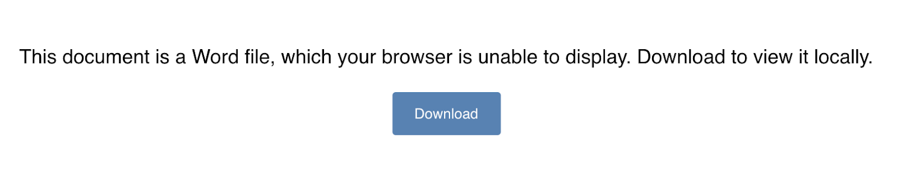
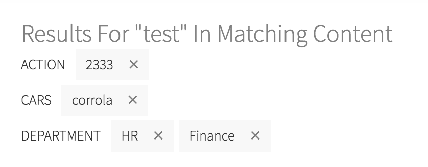
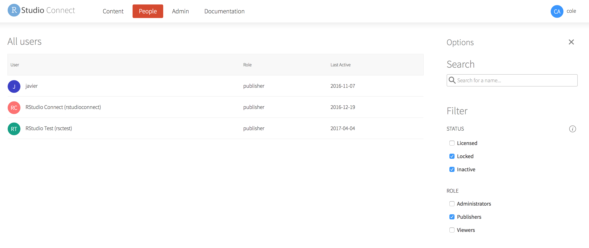

2018-06-19
RStudio Connect version 1.6.4 is now available!
There are a few breaking changes and a handful of new features that are highlighted below. We encourage you to upgrade as soon as possible!
Please take note of important breaking changes before upgrading.
RStudio Connect includes Pandoc 1 and will now also include Pandoc 2. Admins do not need to install either.
If you have deployed content with rmarkdown version 1.9 or higher, then that content will now use Pandoc 2 at runtime. This brings in several bug fixes and enables some new functionality, but does introduce some backwards incompatibilities. To protect older versions of rmarkdown, Pandoc 1 will still be used for content deployed with any rmarkdown version prior to 1.9. Content not using the rmarkdown package will have Pandoc 2 available.
Pandoc is dynamically made available to content when it is executed, so content using the newer version of rmarkdown will see Pandoc 2 immediately upon upgrading RStudio Connect, whether or not you have updated the content recently. The types of backwards incompatibilities we expect are issues like minor white-space rendering differences.
The R Markdown rendering environment has been updated, which will break a certain class of R Markdown documents. No action is needed for the majority of R Markdown documents. Publishers will need to rewrite R Markdown documents that depended on locally preserving and storing state in between renderings.
The update isolates renderings and protects against clashes caused by concurrent writes, but also means that files written to the local directory during a render will not be present or available the next time that the report is rendered.
For example, a report that writes a CSV file to disk on day 1 at a local location, write.csv(‘data.csv’), and then on day 2 reads the same CSV read.csv(‘data.csv’), will no longer work. Publishers should refactor this type of R Markdown document to write data to a database or a shared directory that is not sandboxed. For instance, to /app-data/data.csv.
When a user accesses a Microsoft Word file or some other file type that is not rendered in the browser, Connect previously downloaded the content immediately. We have added a download page that simplifies the presentation of browser-unfriendly file types.

The RStudio Connect Dashboard now includes interactive labels for tag filters in the content listing view. This simplifies keeping track of complex searches, especially when returning to the Dashboard with saved filter state.

The Connect UI truncates log files to show the latest output. However, when someone downloads log files, the downloaded file is no longer truncated. This makes it easier for a developer to inspect asset behavior with the full log file available on Connect.
Connect now allows administrators to filter the users list by multiple account statuses. The last day that each user was active is now displayed along with the user list.

Upgrade Planning
Besides breaking changes above, there are no special precautions to be aware of when upgrading from v1.6.2 to v1.6.4. You can expect the installation and startup of v1.6.4 to be complete in under a minute.
If you’re upgrading from a release older than v1.6.2, be sure to consider the “Upgrade Planning” notes from the intervening releases, as well.
If you haven’t yet had a chance to download and try RStudio Connect, we encourage you to do so. RStudio Connect is the best way to share all the work that you do in R (Shiny apps, R Markdown documents, plots, dashboards, Plumber APIs, etc.) with collaborators, colleagues, or customers.
You can find more details or download a 45-day evaluation of the product at https://www.rstudio.com/products/connect/. Additional resources can be found below.